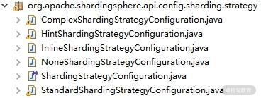
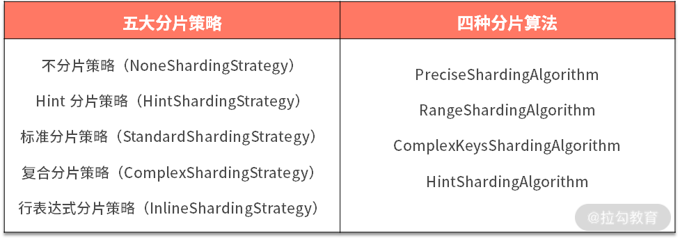

- 00 如何正确学习一款分库分表开源框架？.md.html
- 01 从理论到实践：如何让分库分表真正落地？.md.html
- 02 顶级项目：ShardingSphere 是一款什么样的 Apache 开源软件？.md.html
- 03 规范兼容：JDBC 规范与 ShardingSphere 是什么关系？.md.html
- 04 应用集成：在业务系统中使用 ShardingSphere 的方式有哪些？.md.html
- 05 配置驱动：ShardingSphere 中的配置体系是如何设计的？.md.html
- 06 数据分片：如何实现分库、分表、分库+分表以及强制路由？（上）.md.html
- 07 数据分片：如何实现分库、分表、分库+分表以及强制路由？（下）.md.html
- 08 读写分离：如何集成分库分表+数据库主从架构？.md.html
- 09 分布式事务：如何使用强一致性事务与柔性事务？.md.html
- 10 数据脱敏：如何确保敏感数据的安全访问？.md.html
- 11 编排治理：如何实现分布式环境下的动态配置管理？.md.html
- 12 从应用到原理：如何高效阅读 ShardingSphere 源码？.md.html
- 13 微内核架构：ShardingSphere 如何实现系统的扩展性？.md.html
- 14 分布式主键：ShardingSphere 中有哪些分布式主键实现方式？.md.html
- 15 解析引擎：SQL 解析流程应该包括哪些核心阶段？（上）.md.html
- 16 解析引擎：SQL 解析流程应该包括哪些核心阶段？（下）.md.html
- 17 路由引擎：如何理解分片路由核心类 ShardingRouter 的运作机制？.md.html
- 18 路由引擎：如何实现数据访问的分片路由和广播路由？.md.html
- 19 路由引擎：如何在路由过程中集成多种路由策略和路由算法？.md.html
- 20 改写引擎：如何理解装饰器模式下的 SQL 改写实现机制？.md.html
- 21 执行引擎：分片环境下 SQL 执行的整体流程应该如何进行抽象？.md.html
- 22 执行引擎：如何把握 ShardingSphere 中的 Executor 执行模型？（上）.md.html
- 23 执行引擎：如何把握 ShardingSphere 中的 Executor 执行模型？（下）.md.html
- 24 归并引擎：如何理解数据归并的类型以及简单归并策略的实现过程？.md.html
- 25 归并引擎：如何理解流式归并和内存归并在复杂归并场景下的应用方式？.md.html
- 26 读写分离：普通主从架构和分片主从架构分别是如何实现的？.md.html
- 27 分布式事务：如何理解 ShardingSphere 中对分布式事务的抽象过程？.md.html
- 28 分布式事务：ShardingSphere 中如何集成强一致性事务和柔性事务支持？（上）.md.html
- 29 分布式事务：ShardingSphere 中如何集成强一致性事务和柔性事务支持？（下）.md.html
- 30 数据脱敏：如何基于改写引擎实现低侵入性数据脱敏方案？.md.html
- 31 配置中心：如何基于配置中心实现配置信息的动态化管理？.md.html
- 32 注册中心：如何基于注册中心实现数据库访问熔断机制？.md.html
- 33 链路跟踪：如何基于 Hook 机制以及 OpenTracing 协议实现数据访问链路跟踪？.md.html
- 34 系统集成：如何完成 ShardingSphere 内核与 Spring+SpringBoot 的无缝整合？.md.html
- 35 结语：ShardingSphere 总结及展望.md.html
- 捐赠
19 路由引擎：如何在路由过程中集成多种路由策略和路由算法？
上一课时《18 | 路由引擎：如何实现数据访问的分片路由和广播路由？》，我们在介绍 ShardingRule 对象时，引出了 ShardingSphere 路由引擎中的分片策略 ShardingStrategy，分片策略是路由引擎中的一个核心概念，直接影响了最终的路由结果。今天，我们将围绕这一核心概念展开讨论。
分片策略整体结构
我们先来看分片策略 ShardingStrategy 的定义，ShardingStrategy 位于 sharding-core-common 工程的 org.apache.shardingsphere.core.strategy.route 包中，其定义如下所示：
public interface ShardingStrategy {
//获取分片 Column
Collection<String> getShardingColumns();
//执行分片
Collection<String> doSharding(Collection<String> availableTargetNames, Collection<RouteValue> shardingValues);
}
可以看到 ShardingStrategy 包含两个核心方法：一个用于指定分片的 Column，而另一个负责执行分片并返回目标 DataSource 和 Table。ShardingSphere 中为我们提供了一系列的分片策略实例，类层结构如下所示：

ShardingStrategy 实现类图
如果我们翻阅这些具体 ShardingStrategy 实现类的代码，会发现每个 ShardingStrategy 中都会包含另一个与路由相关的核心概念，即分片算法 ShardingAlgorithm，我们发现 ShardingAlgorithm 是一个空接口，但包含了四个继承接口，即
- PreciseShardingAlgorithm
- RangeShardingAlgorithm
- ComplexKeysShardingAlgorithm
- HintShardingAlgorithm
而这四个接口又分别具有一批实现类，ShardingAlgorithm 的类层结构如下所示：

ShardingAlgorithm 子接口和实现类图
请注意，ShardingStrategy 与 ShardingAlgorithm 之间并不是一对一的关系。在一个 ShardingStrategy 中，可以同时使用多个 ShardingAlgorithm 来完成具体的路由执行策略。因此，我们具有如下所示的类层结构关系图：

由于分片算法的独立性，ShardingSphere 将其进行单独抽离。从关系上讲，分片策略中包含了分片算法和分片键，我们可以把分片策略的组成结构简单抽象成如下所示的公式：
分片策略 = 分片算法 + 分片键
ShardingSphere 分片策略详解
在 ShardingSphere 中，一共存在五种 ShardingStrategy 实现：
- 不分片策略（NoneShardingStrategy）
- Hint 分片策略（HintShardingStrategy）
- 标准分片策略（StandardShardingStrategy）
- 复合分片策略（ComplexShardingStrategy）
- 行表达式分片策略（InlineShardingStrategy）
接下来，我们就对这些 ShardingStrategy一 一进行展开讨论。
1.不分片策略 NoneShardingStrategy
这次我们从简单的开始，先来看 NoneShardingStrategy，这是一种不执行分片的策略，实现方式如下所示：
public final class NoneShardingStrategy implements ShardingStrategy {
private final Collection<String> shardingColumns = Collections.emptyList();
@Override
public Collection<String> doSharding(final Collection<String> availableTargetNames, final Collection<RouteValue> shardingValues) {
return availableTargetNames;
}
}
可以看到在 NoneShardingStrategy 中，直接返回了输入的 availableTargetNames 而不执行任何具体路由操作。
2.Hint 分片策略 HintShardingStrategy
接下来我们来看 HintShardingStrategy，回想我们在上一课时中通过这个 ShardingStrategy 来判断是否根据 Hint 进行路由。我们知道在有些场景下，分片字段不是由 SQL 本身决定，而由依赖于其他外置条件，这时候，就可使用 SQL Hint 灵活地注入分片字段。
关于 Hint 的概念和前置路由的应用方式，可以回顾 [《07 | 数据分片：如何实现分库、分表、分库+分表以及强制路由（下）？》]中的内容。
基于 HintShardingStrategy，我们可以通过 Hint 而非 SQL 解析的方式执行分片策略。而 HintShardingStrategy 的实现依赖于 HintShardingAlgorithm，HintShardingAlgorithm 继承了 ShardingAlgorithm 接口。
其定义如下所示，可以看到该接口同样存在一个 doSharding 方法：
public interface HintShardingAlgorithm<T extends Comparable<?>> extends ShardingAlgorithm {
//根据 Hint 信息执行分片
Collection<String> doSharding(Collection<String> availableTargetNames, HintShardingValue<T> shardingValue);
}
对于 Hint 而言，因为它实际上是对 SQL 执行过程的一种直接干预，所以往往根据传入的 availableTargetNames 进行直接路由，所以我们来看 ShardingSphere 中 HintShardingAlgorithm 接口唯一的一个实现类 DefaultHintShardingAlgorithm：
public final class DefaultHintShardingAlgorithm implements HintShardingAlgorithm<Integer> {
@Override
public Collection<String> doSharding(final Collection<String> availableTargetNames, final HintShardingValue<Integer> shardingValue) {
return availableTargetNames;
}
}
可以看到这个分片算法的执行方式确实是基于 availableTargetNames，但只是直接返回而已。所以对于 HintShardingStrategy 而言，默认情况下实际上并没有执行任何路由效果。HintShardingStrategy 的完整实现如下所示：
public final class HintShardingStrategy implements ShardingStrategy {
@Getter
private final Collection<String> shardingColumns;
private final HintShardingAlgorithm shardingAlgorithm;
public HintShardingStrategy(final HintShardingStrategyConfiguration hintShardingStrategyConfig) {
Preconditions.checkNotNull(hintShardingStrategyConfig.getShardingAlgorithm(), "Sharding algorithm cannot be null.");
shardingColumns = new TreeSet<>(String.CASE_INSENSITIVE_ORDER);
//从配置中获取 HintShardingAlgorithm
shardingAlgorithm = hintShardingStrategyConfig.getShardingAlgorithm();
}
@SuppressWarnings("unchecked")
@Override
public Collection<String> doSharding(final Collection<String> availableTargetNames, final Collection<RouteValue> shardingValues) {
ListRouteValue shardingValue = (ListRouteValue) shardingValues.iterator().next();
Collection<String> shardingResult = shardingAlgorithm.doSharding(availableTargetNames,
new HintShardingValue(shardingValue.getTableName(), shardingValue.getColumnName(), shardingValue.getValues()));
Collection<String> result = new TreeSet<>(String.CASE_INSENSITIVE_ORDER);
result.addAll(shardingResult);
return result;
}
}
我们注意到在 HintShardingStrategy 中，shardingAlgorithm 变量的构建是通过 HintShardingStrategyConfiguration 配置类完成的，显然我们可以通过配置项来设置具体的 HintShardingAlgorithm。在日常开发过程中，我们一般都需要实现自定义的 HintShardingAlgorithm 并进行配置。
[《07 | 数据分片：如何实现分库、分表、分库+分表以及强制路由（下）？》]中演示了这种做法，你可以做一些回顾。
3.标准分片策略 StandardShardingStrategy
StandardShardingStrategy 是一种标准分片策略，提供对 SQL 语句中的=, >, <, >=, <=, IN 和 BETWEEN AND 等操作的分片支持。
我们知道分片策略相当于分片算法与分片键的组合。对于 StandardShardingStrategy 而言，它只支持单分片键，并提供 PreciseShardingAlgorithm 和 RangeShardingAlgorithm 这两个分片算法。
- PreciseShardingAlgorithm 是必选的，用于处理 = 和 IN 的分片；
- RangeShardingAlgorithm 是可选的，用于处理 BETWEEN AND, >, <, >=, <= 分片。
介绍 StandardShardingStrategy 之前，我们先对其涉及的这两种分片算法分别进行讨论。
（1）PreciseShardingAlgorithm
对于 PreciseShardingAlgorithm 而言，该接口用于处理使用单一键作为分片键的 = 和 IN 进行分片的场景。
它有两个实现类，分别是 PreciseModuloDatabaseShardingAlgorithm 和 PreciseModuloTableShardingAlgorithm。显然，前者用于数据库级别的分片，而后者面向表操作。它们的分片方法都一样，就是使用取模（Modulo）操作。以 PreciseModuloDatabaseShardingAlgorithm 为例，其实现如下所示：
public final class PreciseModuloDatabaseShardingAlgorithm implements PreciseShardingAlgorithm<Integer> {
@Override
public String doSharding(final Collection<String> availableTargetNames, final PreciseShardingValue<Integer> shardingValue) {
for (String each : availableTargetNames) {
//根据分片值执行对2的取模操作
if (each.endsWith(shardingValue.getValue() % 2 + "")) {
return each;
}
}
throw new UnsupportedOperationException();
}
}
可以看到，这里对 PreciseShardingValue 进行了对 2 的取模计算，并与传入的 availableTargetNames 进行比对，从而决定目标数据库。
（2）RangeShardingAlgorithm
而对于 RangeShardingAlgorithm 而言，情况就相对复杂。RangeShardingAlgorithm 同样具有两个实现类：分别为 RangeModuloDatabaseShardingAlgorithm 和 RangeModuloTableShardingAlgorithm，它们的命名和代码风格与 PreciseShardingAlgorithm 的实现类非常类似。
这里也以 RangeModuloDatabaseShardingAlgorithm 为例，它的实现如下所示：
public final class RangeModuloDatabaseShardingAlgorithm implements RangeShardingAlgorithm<Integer> {
@Override
public Collection<String> doSharding(final Collection<String> availableTargetNames, final RangeShardingValue<Integer> shardingValue) {
Collection<String> result = new LinkedHashSet<>(availableTargetNames.size());
//根据分片值，决定分片的范围
for (Integer i = shardingValue.getValueRange().lowerEndpoint(); i <= shardingValue.getValueRange().upperEndpoint(); i++) {
for (String each : availableTargetNames) {
//分片值执行对 2 的取模操作，并与目标数据库进行比对
if (each.endsWith(i % 2 + "")) {
result.add(each);
}
}
}
return result;
}
}
与 PreciseModuloDatabaseShardingAlgorithm 相比，这里多了一层 for 循环，在该循环中添加了对范围 ValueRange 的 lowerEndpoint() 到 upperEndpoint() 中各个值的计算和比对。
（3） StandardShardingStrategy 类
介绍完分片算法之后，我们回到 StandardShardingStrategy 类，我们来看它的 doSharding 方法，如下所示：
@Override
public Collection<String> doSharding(final Collection<String> availableTargetNames, final Collection<RouteValue> shardingValues) {
RouteValue shardingValue = shardingValues.iterator().next();
Collection<String> shardingResult = shardingValue instanceof ListRouteValue
//如果分片值是一个列表，则执行 PreciseShardingAlgorithm
? doSharding(availableTargetNames, (ListRouteValue) shardingValue)
//如果分片值是一个范围，则 执行RangeShardingAlgorithm
: doSharding(availableTargetNames, (RangeRouteValue) shardingValue);
Collection<String> result = new TreeSet<>(String.CASE_INSENSITIVE_ORDER);
result.addAll(shardingResult);
return result;
}
可以看到这里根据传入的 shardingValues 的类型分别执行不同的 doSharding 方法，如果输入的是 ListRouteValue 则会使用 PreciseShardingAlgorithm，如下所示：
private Collection<String> doSharding(final Collection<String> availableTargetNames, final ListRouteValue<?> shardingValue) {
Collection<String> result = new LinkedList<>();
for (Comparable<?> each : shardingValue.getValues()) {
//使用 PreciseShardingAlgorithm 进行分片
String target = preciseShardingAlgorithm.doSharding(availableTargetNames, new PreciseShardingValue(shardingValue.getTableName(), shardingValue.getColumnName(), each));
if (null != target) {
result.add(target);
}
}
return result;
}
而如果是 RangeRouteValue 则使用 RangeShardingAlgorithm，如下所示：
private Collection<String> doSharding(final Collection<String> availableTargetNames, final RangeRouteValue<?> shardingValue) {
if (null == rangeShardingAlgorithm) {
throw new UnsupportedOperationException("Cannot find range sharding strategy in sharding rule.");
}
//使用 RangeShardingAlgorithm 进行分片
return rangeShardingAlgorithm.doSharding(availableTargetNames,
new RangeShardingValue(shardingValue.getTableName(), shardingValue.getColumnName(), shardingValue.getValueRange()));
}
4.复合分片策略 ComplexShardingStrategy
与 StandardShardingStrategy 只支持单分片键不同，ShardingSphere 的官网表明 ComplexShardingStrategy 支持多分片键。
ComplexShardingStrategy 的 doSharding 方法，如下所示：
public Collection<String> doSharding(final Collection<String> availableTargetNames, final Collection<RouteValue> shardingValues) {
Map<String, Collection<Comparable<?>>> columnShardingValues = new HashMap<>(shardingValues.size(), 1);
Map<String, Range<Comparable<?>>> columnRangeValues = new HashMap<>(shardingValues.size(), 1);
String logicTableName = "";
for (RouteValue each : shardingValues) {
if (each instanceof ListRouteValue) {
//构建 ListRouteValue
columnShardingValues.put(each.getColumnName(), ((ListRouteValue) each).getValues());
} else if (each instanceof RangeRouteValue) {
//构建 RangeRouteValue
columnRangeValues.put(each.getColumnName(), ((RangeRouteValue) each).getValueRange());
}
logicTableName = each.getTableName();
}
Collection<String> shardingResult = shardingAlgorithm.doSharding(availableTargetNames, new ComplexKeysShardingValue(logicTableName, columnShardingValues, columnRangeValues));
Collection<String> result = new TreeSet<>(String.CASE_INSENSITIVE_ORDER);
result.addAll(shardingResult);
return result;
}
这里基于传入的 RouteValue 分别构建了 ListRouteValue 和 RangeRouteValue，然后传递给 ComplexKeysShardingAlgorithm 进行计算。由于多分片键之间的关系复杂，因此 ComplexShardingStrategy 并未进行过多的封装，而是直接将分片键值组合以及分片操作符透传至分片算法，完全由应用开发者实现，提供最大的灵活度。
基于这一点考虑，ShardingSphere 的 ComplexKeysShardingAlgorithm 的唯一实现类 DefaultComplexKeysShardingAlgorithm 显得非常简单，其代码如下所示：
public final class DefaultComplexKeysShardingAlgorithm implements ComplexKeysShardingAlgorithm<Integer> {
@Override
public Collection<String> doSharding(final Collection<String> availableTargetNames, final ComplexKeysShardingValue<Integer> shardingValue) {
return availableTargetNames;
}
}
可以看到 DefaultComplexKeysShardingAlgorithm 与 NoneShardingStrategy 的实现实际上是一样的，相当于就是什么都没有做，也就是所有的工作都需要交给开发者自行进行设计和实现。
5.行表达式分片策略 InlineShardingStrategy
与前面介绍的各种分片策略相比，InlineShardingStrategy 采用了一种特殊的机制来实现路由。
我们已经在介绍分库分表案例中大量使用了行表达式，也知道在使用行表达式时需要指定一个分片列 shardingColumn 以及一个类似 ds$->{user_id % 2} 的表达式。
你可能会好奇 ShardingSphere 是如何来解析这样的表达式的呢？基于 InlineShardingStrategy 定义的变量，我们可以找到问题的答案：
//分片列
private final String shardingColumn;
//Groovy 中的 Closure 实例
private final Closure<?> closure;
原来，ShardingSphere 在这里用到了 Groovy 中的 Closure 对象。Groovy 是可运行在 JVM 中的一种动态语言，既可以用于面向对象编程，又可以用作纯粹的脚本语言。使用该种语言不必编写过多的代码，同时又具有 Closure 和动态语言中的其他特性。在使用方式上，基本也与使用 Java 代码的方式相同。
基于 Groovy 的动态语言特性，InlineShardingStrategy 提供对 SQL 语句中的 = 和 IN 的分片操作支持，目前只支持单分片键。对于类似 ds$->{user_id % 2} 这样的常见分片算法，可以通过简单配置进行使用，从而避免烦琐的 Java 代码开发。
我们直接来到 InlineShardingStrategy 的 doSharding 方法，该方法的实现过程与标准分片策略 StandardShardingStrategy 中的相同，不同的是需要通过 Groovy 进行解析输入参数从而获取最终路由结果：
private Collection<String> doSharding(final ListRouteValue shardingValue) {
Collection<String> result = new LinkedList<>();
for (PreciseShardingValue<?> each : transferToPreciseShardingValues(shardingValue)) {
//通过 execute 方法解析出最终的结果
result.add(execute(each));
}
return result;
}
这里的 execute 方法中构建了 Groovy 的 Closure 对象，并设置了对应的解析策略以及所需要解析的属性，并最终返回解析的结果：
private String execute(final PreciseShardingValue shardingValue) {
//构建 Groovy 的 Closur e对象
Closure<?> result = closure.rehydrate(new Expando(), null, null);
result.setResolveStrategy(Closure.DELEGATE_ONLY);
result.setProperty(shardingColumn, shardingValue.getValue());
//获取解析结果
return result.call().toString();
}
最后，作为总结，我们要注意所有的 ShardingStrategy 相关类都位于 sharding-core-common 工程的 org.apache.shardingsphere.core.strategy 包下：

ShardingStrategy 相关类的包结构
而所有的 ShardingAlgorithm 相关类则位于 sharding-core-api 工程的 org.apache.shardingsphere.api.sharding 包下：

ShardingAlgorithm 相关类的包结构
我们在前面已经提到过 ShardingStrategy 的创建依赖于 ShardingStrategyConfiguration，ShardingSphere 也提供了一个 ShardingStrategyFactory 工厂类用于创建各种具体的 ShardingStrategy：
public final class ShardingStrategyFactory {
public static ShardingStrategy newInstance(final ShardingStrategyConfiguration shardingStrategyConfig) {
if (shardingStrategyConfig instanceof StandardShardingStrategyConfiguration) {
return new StandardShardingStrategy((StandardShardingStrategyConfiguration) shardingStrategyConfig);
}
if (shardingStrategyConfig instanceof InlineShardingStrategyConfiguration) {
return new InlineShardingStrategy((InlineShardingStrategyConfiguration) shardingStrategyConfig);
}
if (shardingStrategyConfig instanceof ComplexShardingStrategyConfiguration) {
return new ComplexShardingStrategy((ComplexShardingStrategyConfiguration) shardingStrategyConfig);
}
if (shardingStrategyConfig instanceof HintShardingStrategyConfiguration) {
return new HintShardingStrategy((HintShardingStrategyConfiguration) shardingStrategyConfig);
}
return new NoneShardingStrategy();
}
}
而这里用到的各种 ShardingStrategyConfiguration 也都位于 sharding-core-api 工程的org.apache.shardingsphere.api.sharding.strategy 包下：

ShardingStrategyConfiguration 相关类的包结构
这样，通过对路由引擎的介绍，我们又接触到了一大批 ShardingSphere 中的源代码。
至此，关于 ShardingSphere 路由引擎部分的内容基本都介绍完毕。作为总结，我们在《17 | 路由引擎：如何理解分片路由核心类 ShardingRouter 的运作机制？》中所给出的时序图中添加了 ShardingStrategy 和 ShardingAlgorithm 部分的内容，如下所示：

从源码解析到日常开发
在我们设计软件系统的过程中，面对复杂业务场景时，职责分离始终是需要考虑的一个设计点。ShardingSphere 对于分片策略的设计和实现很好地印证了这一观点。
分片策略在 ShardingSphere 中实际上是一个比较复杂的概念，但通过将分片的具体算法分离出去并提炼 ShardingAlgorithm 接口，并构建 ShardingStrategy 和 ShardingAlgorithm 之间一对多的灵活关联关系，我们可以更好地把握整个分片策略体系的类层结构，这种职责分离机制同样可以应用与日常开发过程中。
小结与预告
承接上一课时的内容，今天我们全面介绍了 ShardingSphere 中的五大分片策略和四种分片算法以及它们之间的组合关系。

ShardingSphere 路由引擎中执行路由的过程正是依赖于这些分片策略和分片算法的功能特性。当然，作为一款具有高扩展性的开源框架，我们也可以基于自身的业务需求，实现特定的分片算法并嵌入到具体的分片策略中。
这里给你留一道思考题：ShardingSphere 中分片策略与分片算法之间是如何协作的？ 欢迎你在留言区与大家讨论，我将一一点评解答。
在路由引擎的基础上，下一课时将进入 ShardingSphere 分片引擎的另一个核心阶段，即改写引擎。
© 2019 - 2023 Liangliang Lee. Powered by gin and hexo-theme-book.